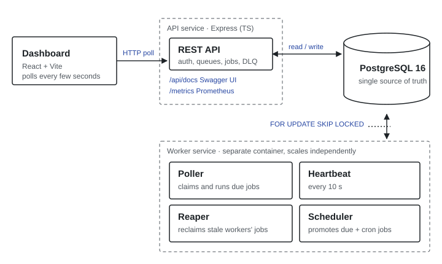
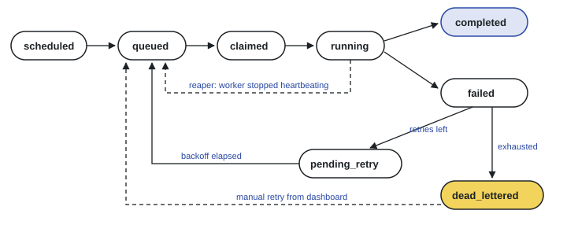
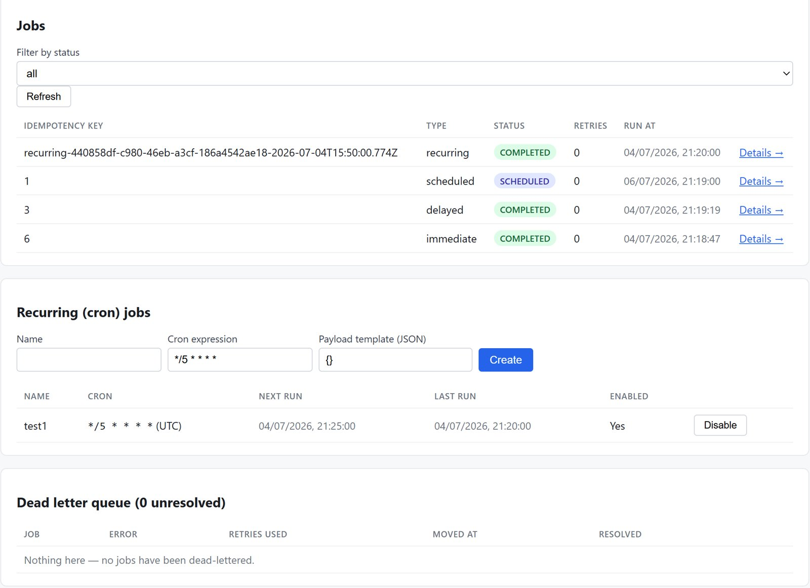
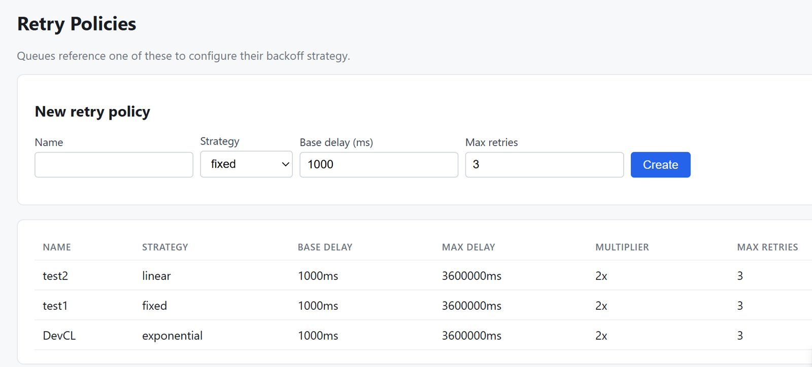

Problem
Applications constantly need work done outside a request: sending emails, generating reports, retrying a failed payment. A scheduler has to guarantee that a job runs, that two workers never run the same job at once, and that a crashed worker doesn't silently lose what it was holding.
Users and context
Two kinds of user: developers who submit jobs through the API, and operators who need to see queue health, failing jobs and worker status at a glance. Organisations own projects, projects own queues, and queues run jobs — immediate, delayed, scheduled, recurring or batch — each with its own retry policy.
Approach
The central decision was to use PostgreSQL as the only coordination point, rather than adding a message broker such as Redis or RabbitMQ.
- Atomic claiming. Workers claim jobs with
SELECT … FOR UPDATE SKIP LOCKED, so two workers racing the same query can never pick up the same row. - Why not a broker. A broker would be a second stateful system that has to stay consistent with job history and retry configuration. For this scale, one database is simpler and correct; the trade-off is a lower throughput ceiling, which I documented.
- At-least-once delivery. Exactly-once isn't achievable when a worker can crash mid-job, so every job carries an idempotency key and handlers are expected to be safe to re-run.
- Polling over WebSockets. Dashboard data changes on the order of seconds, so interval polling gives near-live updates for a fraction of the complexity.

Design and implementation
The worker runs as its own container with four loops:
- Poller walks non-paused queues by priority, checks remaining capacity, and claims due jobs.
- Heartbeat records that the worker is alive every 10 seconds.
- Reaper returns jobs held by a worker whose heartbeat is stale back to the queue. It also uses
SKIP LOCKED, so every worker can run it without leader election. - Scheduler promotes delayed and retrying jobs when they're due, and turns recurring cron templates into new jobs.

The API is documented with an OpenAPI spec served through Swagger UI, exposes a Prometheus /metrics endpoint, and the dashboard shows queue health, worker status, a job explorer with logs, and throughput charts.


Challenges
- Graceful shutdown that wasn't. The worker's drain logic worked, but Docker's default stop timeout was shorter than in-flight jobs, so the container was killed mid-drain (exit 137). Fixed by setting a 30-second stop grace period above the drain timeout.
- Jobs that die twice. A job manually retried after being dead-lettered could fail again and hit a unique constraint. The dead-letter insert became an upsert, and the failure path was hardened so a secondary error can't crash the worker.
- Testing real locking. Tests run against a real Postgres instance instead of mocks, because the behaviour that matters is the database's locking. GitHub Actions runs lint and the test suite against a Postgres 16 service container on every push and pull request.
Results and learnings
The system runs end to end with Docker Compose: API, worker, database and dashboard as independent containers, with migrations, tests and written design decisions in the repository.
The biggest lesson was that reliability is mostly about naming the guarantee honestly. Saying "at-least-once" and designing for duplicate runs is better than promising "exactly-once" and failing quietly.
Next, I'd like to give the dashboard a proper interface design pass — clearer failure states and a calmer layout for operators scanning many queues.